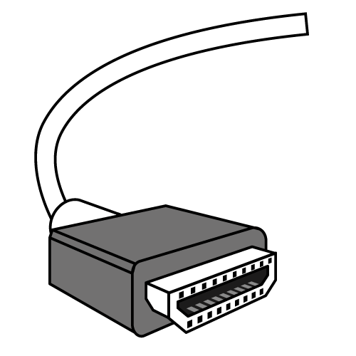

HDMIは出力装置(グラフィックボード)から出力されたデータをモニター等装置に
映像データを送るケーブルである。
主にパソコンモニターやテレビに活用されている。
4Kや8K等高画質なモニターの場合は4Kや8K対応のHDMIを買うこと
その他のHDMI
HDMIでも形状が違うものがある。
MINI HDMIとmicroHDMIがある。
基本的に小型のモバイルモニターやラズベリーパイなどの小型のマイコンピュータなど
小さな機械で映像出力する場合この2つどれかが使われる時がある。
例としてマイコンピュータ(ラズベリーパイ)ではmicroHDMIが使われている。
画像
